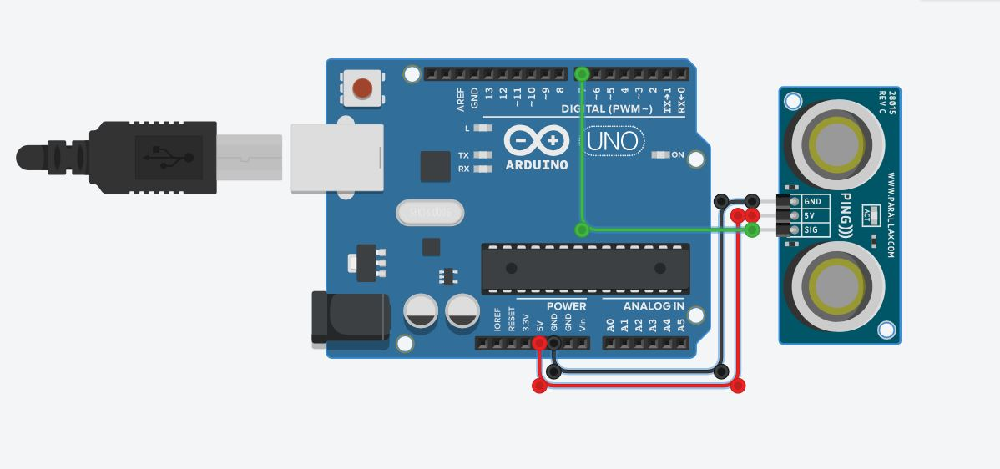

我的Arduino项目
项目介绍
When your hand approaches the ultrasonic sensor, display the distance between your hand and the ultrasonic sensor
代码介绍
#include
const int trigPin = 7;
const int echoPin = 6;
void setup() {
Serial.begin(9600);
pinMode(trigPin, OUTPUT);
pinMode(echoPin, INPUT);
}
void loop() {
digitalWrite(trigPin, LOW);
delayMicroseconds(2);
digitalWrite(trigPin, HIGH);
delayMicroseconds(10);
digitalWrite(trigPin, LOW);
unsigned long pulseStartTime = micros();
while (digitalRead(echoPin) == LOW);
unsigned long pulseEndTime = micros();
unsigned long pulseDuration = pulseEndTime - pulseStartTime;
float distanceCm = pulseDuration * 0.034 / 2;
float distanceInches = distanceCm / 2.54;
Serial.print("Distance: ");
Serial.print(distanceCm);
Serial.print(" cm (");
Serial.print(distanceInches);
Serial.println(" inches)");
delay(500);
}
电路图展示

成品展示
Your browser does not support the video tag.
Back